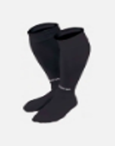

Nuestros Productos
Chandal
Chandal de paseo ideal para ir a los partidos.

Ropa Entrenamiento
Ropa que solo se debe llevar para ir a los entrenamientos.
Sudadera
Se debe utilizar en los dias mas frios.
Polo de Paseo
se debe utilizar para asistir a los partidos.
Chubasquero
Ideal para los dias mas frios y chuviosos.
Abrigo
Para la temporada de invierno.
Medias verdes
Se puede utilizar tanto para los partidos como para los entrenaminetos.
Ropa de Portero
Esta ropa de portero es unicamente para los Entrenamientos.

Medias Porteros
Medias que se pueden utilizar tanto en partidos como en entrenamientos.